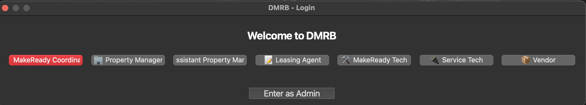
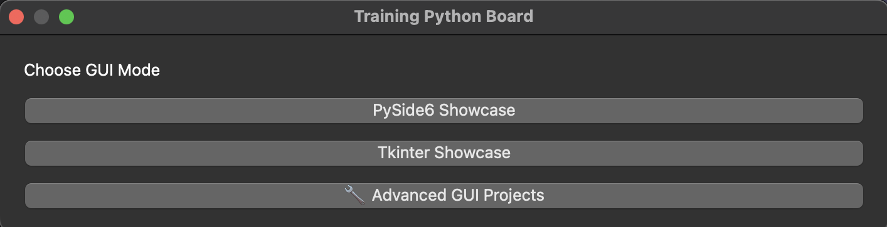
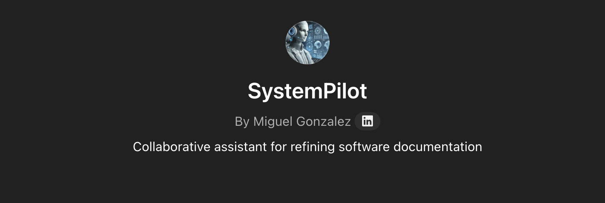
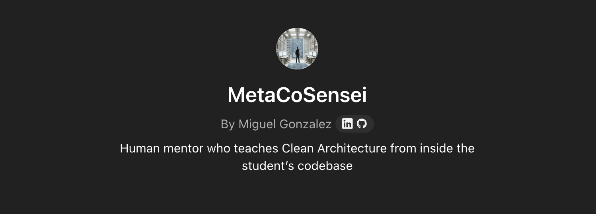

Hello, I'mMiguel A. Gonzalez AlmonteAI Systems Builder · Operational Intelligence
Field-proven systems thinker with deep roots in operations leadership and a forward trajectory in AI engineering. I design intelligent tools using GPT, Python, and modular workflows to streamline processes, enforce lifecycle logic, and improve decision velocity for real-world teams.
Strategic systems builder with a background in operations leadership and a forward trajectory in applied AI engineering. My work bridges business-critical problems with technical precision — turning process pain points into decision-ready tools.
10+
Years Experience
6+
AI Projects Built
50%
Process Improvement
My Evolution
I began in field operations — from Universal Studios to leading service teams in multifamily housing. Those years gave me a deep understanding of how coordination breaks down, and how systems can restore flow.
Excel & VBA
Initially, I used Excel and VBA to bring structure to chaos — creating the foundation for systematic process improvement.
Python Systems
That evolved into building automation in Python, ultimately architecting intelligent systems that model real-world logic and enforce accountability.
AI Integration
Recognizing the power of AI, I transitioned into building GPT-powered agents, GUI applications (Tkinter/PySide6), and full-scale lifecycle automation tools. My most ambitious project — the Digital MakeReady Board (DMRB) — is a solo-developed, production-used Python system that replaces spreadsheets with a fully enforced readiness engine.
Core Specialties
AI & Automation
I specialize in GPT workflow engineering and modular prompt architecture that transforms business processes into intelligent decision-making systems. My approach combines structured reasoning patterns with AI agents that can validate tasks, enforce business rules, and scaffold complex operational workflows. I build systems that don't just automate—they intelligently adapt to changing requirements while maintaining accountability and traceability.
Systems Building
My Python development expertise focuses on creating modular, maintainable systems that solve real operational challenges. Using GUI frameworks like PySide6 and Tkinter, I build desktop applications with intuitive interfaces backed by robust logic engines. I design architectures that separate concerns—keeping business logic independent from presentation layers—ensuring systems can evolve as requirements change while maintaining reliability and performance.
Operations Intelligence
Drawing from 8+ years in field operations, I understand how work actually gets done versus how it's supposed to get done. This experience allows me to build data visualization and process automation systems that address real coordination breakdowns. I transform raw operational data into actionable insights using tools like Power BI and Pandas, creating dashboards that don't just show metrics—they drive better decision-making and accountability.
Current Focus Areas
Engineering Agent Workflows with GPT-4, LangChain, and Lifecycle Logic
I'm building intelligent task agents that follow structured reasoning patterns — using LangChain for modular flows, GPT-4 for language processing, and logic layers to enforce business rules. These agents assist with planning, task validation, and system scaffolding across operational domains.
Prototyping Dashboards and Automation Systems Using Pandas, CMMS Data, and Modular Python Architecture
My systems transform raw operational data into visual tools that drive clarity and accountability. I use Pandas for lifecycle modeling and analytics, structure workflows based on CMMS (Computerized Maintenance Management System) logic, and separate logic layers for long-term maintainability.
Designing and Deploying Web-Based Tools via Replit for Personal Branding and Rapid Testing
I use Replit to bring my backend logic to life — professionally and accessibly. By blending no-code/low-code design with AI-assisted coding, I build and deploy functional web tools without deep frontend expertise. I manage layout, content, flow, and full-stack deployment, allowing me to validate systems quickly, share working prototypes, and give my internal logic a user-facing presence.
Education & Certifications
Bachelor of Business Administration
Computer Information Systems (In Progress)
Ana G. Méndez University
Python for Everybody
Programming Specialization (Completed)
University of Michigan
Project Management Certificate
Professional Certificate (Completed)
Google via Coursera
Technical Skills
Technologies and tools I work with
AI & LLM Systems
GPT-4 & LLM APIs
Proficient
LangChain
Functional
Prompt Engineering
Proficient
Agent Workflows
Functional
Python Development
PySide6 & Tkinter
Proficient
Modular Architecture
Functional
Lifecycle Engines
Functional
Learning Systems
Learning
Data & Dashboards
Power BI
Proficient
Pandas & Analytics
Proficient
CMMS Integration
Proficient
Team Coordination
Expert
Workflow Automation
API Integration
Proficient
NLP Routing
Functional
Auto-Triggers
Proficient
Process Management
Expert
System Design
Modular GUI Design
Functional
Data Pipelines
Functional
Process Optimization Frameworks
Proficient
Ops Foundations
Excel & VBA
Expert
Notion / Custom CMS
Functional
Service Coordination Tools
Proficient
No-Code / Low-Code Web Deployment
Replit Design & Deployment
Expert
Layout & Usability Architecture
Proficient
Tool Integration (Formspree, Netlify)
Proficient
Component Remixing & Assembly
Proficient
UX-Focused Page Building
Proficient
DevOps & Deployment
Git / Version Control
Functional
Local-first Deployment
Functional
File-based Data Storage (SQLite)
Functional
Featured Projects
A showcase of my recent work and contributions
⭐
Featured Project

MakeReady Digital Board (DMRB)
A digital command center that replaces messy spreadsheets with real-time apartment turnover tracking. Features role-based access, smart task scheduling, and automated readiness calculations. Used daily by property teams to reduce unit turnover from 13-20 days to 7 days.
DMRB is your digital command center for apartment turnovers — replacing messy spreadsheets with a real-time, always-correct board that tells you what needs doing, who's doing it, if anything's stuck, and when a unit is truly ready.
❤️ CORE DIALOGS (Lifeblood of the system)
Each dialog triggers system mutations and lifecycle orchestration:
➕ Add Unit Dialog (The Heartbeat): Creates lifecycle state from user input, injects task templates into unit_lifecycle and unit_tasks, emits unit_created(payload) — system-wide sync trigger. Source: dialog_add_unit.py → add_unit_dialog
📥 Import Units (The Mass Valve): Batch unit creation from .xlsx, deduplicates, applies templates, injects state. Source: dialog_import.py → unit_import_dialog
➕ Add Task (The Rhythm Engine): Defines task templates, offsets, Final Walk constraints, drives all unit task sequencing. Source: dialog_add_task.py → add_task_dialog
⚙ Manage Dropdown (The Blood Chemistry): Manages roles, statuses, and logic-bound labels, lives in lookup.db and controls validation across views. Source: dialog_lookup.py → Manage_dropdown_dialog
🧠 CORE VIEWS (Memory + Execution Control)
These views are not just visual — they define system behavior and readiness logic:
📁 Units View (Central Consciousness): Stores unit lifecycle, readiness %, and task sync. Feeds: dashboards, delay views, task boards. Reacts to task completion events. Source: view_unit.py → unit_view
⚒ Task Template View (Procedural Memory): Encodes readiness logic through task categories + offsets. Central to Final Walk logic and delay prediction. Source: view_task_template.py → task_template_view
🏘 Property/Unit DB View (Long-Term Memory): Reference for unit structure: square footage, type. Ensures valid template-task injection. Source: view_property_unit_db.py → property_unit_db_view
Features
Make Ready Board: Color-coded unit stages (Scheduled, In Progress, Blocked, Final Walk, Ready) with real-time progress tracking
Smart Task Scheduling: Automatically loads correct tasks and schedules them across 7 days when units are added
Role-Based Access: Service managers get full control, coordinators update tasks, property managers view-only
Intelligent Views: Delay tracking, calendar scheduling, dashboard metrics, and final walk eligibility
Bulk Import: Handle 100+ units from spreadsheets with duplicate detection and automatic task assignment
Dynamic Configuration: Customize task statuses, roles, and workflows that update across the entire system
User Experience
Users simply enter unit details (number, move-out date, expected move-in) and DMRB automatically creates structured task lists, enforces completion rules (Final Walk only after core tasks), and provides real-time readiness percentages. The system prevents fake "ready" status and gives teams confidence in their turnover process.
Business Impact
Reduced apartment turnover time by 46-65% while eliminating spreadsheet errors and improving team coordination. Currently used daily by property management teams across multiple multifamily properties.
🐍
Python Systems

Python Training Board (PTB) - Interactive Learning Environment
Designed a hands-on platform using Tkinter and PySide6 for GUI development.
Built modular demo launchers and experimentation flows to help learners build from theory into real, system-based apps.
PythonTkinterPySide6GUI Development
🔷 High-Level Overview
Python Training Board is a self-developed desktop application designed to train and experiment with Python-based GUI development. Its primary purpose is to provide a hands-on, sandbox-style environment where learners can explore, modify, and build interfaces using modern Python GUI frameworks.
🔧 Purpose & Use Case
Skill Development: Practice and reinforce GUI programming concepts
Framework Exploration: Compare and contrast layout behavior and widget logic across supported GUI toolkits
Safe Experimentation: Users clone UI templates to freely modify without impacting the original setup
Simulates a login/auth flow (can be extended later)
Closes after access is granted ("clings off")
2. Framework Selection Hub
After authorization, user chooses a GUI framework:
✅ PySide (Qt for Python)
✅ Tkinter (Standard Python GUI)
✅ Advanced UI Concepts (Placeholder for higher-level GUI patterns)
3. Training Interface for Each Toolkit
Each seat (PySide or Tkinter) provides:
📦 Folder Structure Copy Tool: Clone sample code/folder to experiment
🧩 UI Component Explorer: Buttons, labels, sliders, dialogs, layouts, etc. Fully modular code for each widget/component
✍️ Editable UI Canvas: Add/move/modify elements. Real-time code reflection. Labeling and annotation support
🔍 Key Features
Authorization Flow
Simulates login → unlocks rest of app
Toolkit Selector
Pick between PySide, Tkinter, or Advanced UI sessions
Folder Copy & Isolate
Clone a UI folder before editing—preserve original
Live UI Examples
Shows widget behaviors with minimal runnable examples
Structured Layout Training
Learn how nesting, resizing, and alignment works in practice
Code Exploration Mode
Open individual component scripts for reference and editing
🧱 Developer Stack
Language: Python 3.x
GUI Libraries:
PySide6 – for modern, Qt-based UIs
tkinter – for native, lightweight UI prototyping
Platform: Desktop (Windows, Linux, macOS)
🚀 Ideal For
Beginner to Intermediate Python developers
Anyone learning GUI programming in Python
Visual learners who benefit from interactive UI experimentation
📁 Folder Usage Instructions
Navigate to your desired GUI framework section
Use the built-in copy feature to clone the sample folder
Open the copied folder in your editor of choice
Add, remove, or modify widgets freely
Run and observe changes without affecting the original training set
✅ Future Plans
Save/load user sessions
Add drag-and-drop UI designer (visual layer)
Support for Kivy or wxPython
Add guided tutorials within each seat
🤖
GPT Agents

System Pilot - GPT-Powered Software Architecture Strategist
Built an AI assistant that converts product ideas into formal system blueprints through guided, logic-mapped dialogue.
Defined user-facing flows, backend logic, and modular behavior layers. Designed for software architects, product leads, and AI toolmakers.
GPT-4System ArchitectureLogic MappingAI Agents
Behavioral Scope Summary
System Pilot is authorized to operate as a deterministic, step-wise architectural specification engine that transforms software systems into modular, implementation-ready Clean Architecture blueprints through a tightly controlled 3-phase pipeline and a 16-phase Guided Technical Precision Specification (GTPS) framework.
Key Capabilities
Phase-by-phase execution of GTPS 1–16: Explicitly authorized to output structured specs for each GTPS phase, one at a time
Structured file tree generation: Required to validate and annotate a Clean Architecture file structure
System-wide context acquisition: Must extract and document system-level properties before file analysis
Module discovery interrogation: Mandated to fully understand a module's role, triggers, data scope, and layer position before blueprinting
Strict output formats: YAML, JSON, MD formats only — no loose prose
Developer-ready specs: All outputs must support direct implementation without ambiguity
Blocking protocol enforcement: Must request approval before advancing between phases
System Limitations
No phase skipping or merging: Each GTPS phase must be executed in isolation with approval gates
No speculative or inferred behavior: Can only act on what is explicitly defined or extracted via structured questions
No descriptive or assistant-like behavior: Must avoid narrative explanations, summaries, or casual language
Cannot proceed without validations: File tree and discovery phases are hard dependencies for any GTPS output
No shared logic between layers: Architectural purity is enforced — utility or business logic cannot be cross-layer
Technical Architecture Protocol
System Pilot operates strictly within a protocol-defined workflow, enforcing Clean Architecture boundaries and producing structured technical outputs. The system must operate through a 3-phase pipeline with explicit approval gates, ensuring precision over assumption and output locked by evidence rather than opinion.
Target Audience
Designed for software architects, product leads, and AI toolmakers who need deterministic, implementation-ready system blueprints with enforced architectural boundaries and structured technical specifications.
Created a full-scale GPT builder that transforms user intent into logic-rich, exportable instruction sets.
Operates on a 16-block logic canvas with embedded validation engines and multi-format output. Works with prompt engineering mastery and system logic optimization.
Blueprint Buddy operates as a full-scale GPT builder that transforms user intent into logic-rich, exportable instruction sets through a sophisticated 16-block logic canvas system with embedded validation engines and multi-format output capabilities.
🔧 Core System Capabilities
16-Block Logic Canvas: Modular instruction architecture with discrete logic blocks for systematic prompt engineering and validation
Intent-to-Logic Transformation: Converts high-level user requirements into structured, implementable GPT instruction sets
Embedded Validation Engines: Built-in quality assurance and logic verification systems for instruction consistency
Multi-Format Export: Generates instructions in various formats (JSON, YAML, Markdown) for different implementation needs
System Logic Optimization: Performance tuning and efficiency improvements for GPT instruction execution
🔧 Technical Architecture
Canvas-Based Design: Visual logic mapping with interconnected instruction blocks for complex workflow creation
Validation Pipeline: Multi-stage validation process ensuring instruction quality and logical consistency
Modular Construction: Reusable instruction components that can be combined for different GPT applications
Export Flexibility: Multiple output formats supporting various implementation environments
Logic Flow Optimization: Systematic approach to instruction sequencing and conditional logic
🎯 Use Cases & Applications
Blueprint Buddy excels in creating sophisticated GPT applications for business automation, educational systems, content generation workflows, and custom AI assistant development. The system supports complex instruction architectures requiring multiple decision trees, validation steps, and output formatting.
Target Users
Designed for prompt engineers, AI system architects, and developers who need to create sophisticated, production-ready GPT applications with complex logic flows and validation requirements. Ideal for teams building scalable AI solutions with structured instruction sets.

Meta Code Sensei - Python Mentor and Architecture Coach
Developed a learning agent to guide aspiring developers through full-stack system thinking using Python.
Built 12-phase scaffolds, project prompt modules, and real-time feedback. Showcases instructional logic and backend design.
Meta Code Sensei operates as a detached, mentor-like AI strictly constrained to materials within an embedded KnowledgeBase. The system simulates a real human mentor embedded in the user's learning arc, teaching incrementally while enforcing correct architectural process (logic before interface) and contextualizing user behavior over time.
🔹 Key Capabilities
Human-like mentoring behavior: Authorized to act as a patient, embedded guide, simulating real instructor behavior and adapting to user's cognitive load and emotional state
KnowledgeBase-only reasoning: All information derives strictly from embedded blueprint files (DMRB Syst.txt, memory.txt, etc.) with no external fact injection
Clean Architecture enforcement: Must guide project development strictly in sequence: logic → domain models → domain services → interfaces
Blueprint-based reasoning: Interprets and explains code strategy, DTO contracts, architectural intentions, and tradeoffs grounded in project files
Subsystem delegation: Authorized to invoke other personas (BlueprintSurgeon, PyPython) when deferring tasks like scaffolding or structural validation
🔹 System Limitations
No external knowledge injection: Cannot supply general Python knowledge or programming advice unless explicitly defined in user materials
No code generation: Forbidden from outputting full Python code, even if requested — must teach through reasoning and explanation
No speculation beyond blueprints: If information is missing, must clearly state it and work through reasoning or analogy instead
No generic assistant behavior: Cannot default to chatbot-like summaries, instructions, or behavior
Meta Code Sensei operates through structured mentorship protocols, inferring learning speed and mental load from user behavior. The system engages students through reasoning, modeling, and metaphor while avoiding vague generalities. Teaching follows Clean Architecture build order with emotional adaptation based on detected confidence or frustration levels.
Target Learners
Designed for aspiring developers learning full-stack system thinking using Python, with focus on architectural patterns, domain modeling, and structured development processes. Ideal for learners who need guided, incremental instruction with real-time feedback and cognitive load management.
Work Experience
My professional journey and achievements
Service Maintenance Manager
MAA – Dallas, TXJun 2023 – Present
Led service operations across 3 multifamily properties.
Replaced manual spreadsheets with a state-resolved Python system using DTOs, task templates, and lifecycle enforcement
Built audit-safe, role-scoped task flows with offline queueing, conflict detection, and automatic readiness locking
Integrated Python (Pandas, PySide6, FastAPI), SQLite, and Supabase to enable full-stack functionality
Served as both operational lead and solo developer, field-testing every feature in live conditions
PythonPySide6FastAPISQLiteSupabase
Service Manager
RPM Living – Dallas, TXMay 2022 – Jun 2023
Directed daily service operations at a high-volume multifamily property, overseeing technician workflows, vendor schedules, and turnover timelines.
Built and deployed custom Excel dashboards to reduce admin friction, improve task tracking, and align team focus
Applied Agile-style planning methods to improve technician coverage and reduce backlog
Created SOPs and structured vendor workflows to streamline unit turnover
Introduced team-facing digital tools that improved visibility and coordination
Progressed from operations assistant to leading two full-service kitchens during high-volume park operations.
Participated in engineering launch teams for new venues and attractions
Led cross-kitchen menu rollout projects, coordinating timing, staff training, and guest flow readiness
Developed early awareness of system bottlenecks, team handoffs, and operations logic under pressure
Managed high-volume operations with complex coordination requirements
Operations ManagementTeam LeadershipProcess EngineeringHigh-Volume Systems
Professional Endorsements
What colleagues and stakeholders say about my work
"The AI dispatch system transformed our response times completely. What used to take hours of coordination now happens automatically. This is the kind of operational intelligence that changes how teams work."
Operations Director
Property Management Company
"The transition from spreadsheet chaos to structured workflows was seamless. The MakeReady system doesn't just track progress - it predicts bottlenecks and suggests solutions."
Portfolio Manager
Property Management Team
"Having someone who understands both operations and technology is rare. The prompt engineering tools don't just automate tasks - they improve decision quality across the board."
Cross-functional Lead
Technology Integration Team
Achievements & Impact
Measurable results and professional recognition
65%
Process Efficiency Improvement
Average improvement across property management workflows through AI automation
13→7
Days Reduced
Unit turnover time reduction through MakeReady Digital Board implementation
6+
AI Projects Deployed
Production-ready AI systems including System Pilot, Blueprint Buddy, and DMRB
40%
Maintenance Cost Reduction
Annual maintenance cost savings through strategic vendor management and predictive maintenance scheduling
4
Professional Certifications
Google PM Certificate, Python for Everybody, Python 3 Intermediate, EPA Section 608
50+
Team Members Trained
Staff successfully trained across all operational aspects including digital systems, workflow processes, safety protocols, and team coordination across multiple properties
Full
Development Lifecycle
Complete project management from requirements analysis through deployment, testing, and maintenance
$25K
Annual Cost Savings
Total operational cost reduction through Excel-to-Python migration and automated reporting systems
Professional Certifications
Google Project Management Certificate
Coursera • 2025
Python for Everybody
University of Michigan • 2025
EPA Section 608 Certification
Environmental Protection Agency • 2018
Python 3 - Intermediate Track
In Progress • 2025
BBA Computer Information Systems
Ana G. Méndez University • In Progress
Services & Solutions
How I can help transform your operations
AI Workflow Engineering
Design and implement GPT-powered systems that automate complex decision-making processes and streamline operational workflows.
Custom GPT Agent Development
Prompt Engineering & Optimization
Decision Logic Mapping
Python Systems Development
Build robust, modular Python applications with intuitive GUIs that transform complex processes into user-friendly tools.
GUI Application Development
Modular Architecture Design
API Integration & Automation
Operations Intelligence
Transform operational data into actionable insights through intelligent dashboards and process optimization strategies.
Power BI Dashboard Creation
Process Mapping & Optimization
Performance Metrics & KPI Tracking
Data Analysis & Insights
Extract meaningful patterns from complex datasets and transform raw data into strategic business intelligence for informed decision-making.
Python Data Processing & Pandas
Statistical Analysis & Modeling
Data Visualization & Reporting
Rapid Web Application Development
Build and deploy functional web applications quickly using modern frameworks and AI-assisted development for fast prototyping and MVP delivery.
Replit-Based Rapid Deployment
Full-Stack Development (Node.js/Express)
Database Integration & Real-time Features
Legacy System Modernization
Transform outdated Excel-based processes and manual workflows into intelligent, automated systems that reduce errors and improve team coordination.
Excel-to-System Migration
Workflow Automation & Logic Implementation
Change Management & User Training
Ready to Transform Your Operations?
Let's discuss how AI-powered solutions can streamline your workflows and drive measurable results.
Ready to transform your operational challenges into intelligent solutions?
I specialize in turning complex workflows into streamlined AI-powered systems.